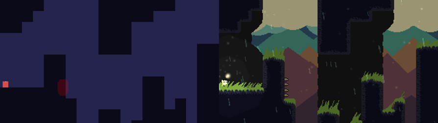

preface
This is a translated -and hopefully truncated- version of my thesis on the practical usage of game feel. While this will stick to the script of the original, it will also be more freeform in nature. I’m planning on writing it in a very flow-of-mind state, as I usually do, so I apologize for any rough edges that might be left in due to lack of editing. Because the original was limited to only using pictures to illustrate concepts, I’m hoping to also utilize a lot of gifs in this version of the thesis.
We’ll first go through the underlying theory behind game feel, determine some other concepts that can be applied to that theory, and then put that into practice and see how it goes. We’ll learn how to measure how a game feels and how we can use that to our advantage when designing games, as well as some tricks we can utilize to improve game feel. Then we’ll try to link those tricks back to the underlying theory in the hopes of gaining knowledge that we can apply to other games.
Alright, with that preamble out of the way, let’s get to the meat of things.
what is game feel?
Two visually and mechanically similar games can end up feeling very different when played. There are many hidden things that are working under the hood that end up determining how any given game ends up feeling.
To explore those things, I’ll be relying heavily on Steve Swink’s book “A Game Designer’s Guide To Virtual Sensation”. It is as far as I could find, the only book on the subject, very much acting as the inspiration of this thesis. It forms the underlying theory, and I think it is very cool, but we should remember not to base all our knowledge on one source, so try to take some things with a grain of salt, I guess? It’s just one guy, after all, but most of the theory I will just be parroting from him. I’m also just one guy who’s not even a professional, so take everything here with a grain of salt, haha!
I’ll also be truncating and omitting parts of the book for the sake of brevity. I’ll largely focus on the basic nuts and bolts of game feel, as well as how to measure it. The type of game feel Swink quantifies is also pretty much only applicable to action games, and that’s what I’ll be focusing on as well.
Alright, so Swink says that to achieve true game feel, a game has to have 3 things: real-time control, spatial simulation and polish. Let’s go over those one at a time.
real-time control
Real-time control means the constant control of a game object, usually a player character (PC). When playing a game, the player sort of melds in with the PC. The PC becomes the representation of the player inside the game. The player doesn’t think of the PC as its own entity, rather than a direct extension of the player. To determine what qualifies as constant control, we can look at the human processor model.
There’s this thing called a perceptual cycle that is a model of how we humans perceive the things around us. It can be divided into three smaller cycles:
- Perceiving information and delivering it to the brain (~100ms)
- In this context, the player looking at the computer screen
- The brain processing this information and deciding what to do (~70ms)
- Player’s motoric functions trying to follow the brain’s orders (~70ms)
- The player’s hands issuing commands to the game via a controller
This forms the basic loop we interact with games. Kinda obvious, I know. We react to what’s happening on the screen, yeah. But these cycles are independent of each other and going in their loops in different syncs. We can perceive new info before our motoric functions are finished with issuing commands to the previous stimuli. The times those cycles take to loop are approximations and will depend on the player. The basic gist of this is, though, that the game will have to provide stimulus to the player in the timeframe of these cycles. The low-end is around 10fps. Any lower and our brains will not properly think of the gameplay as continuous, rather as a series of images, a slideshow, if you will. Naturally, the higher the frame rate, the smoother the game will appear to the player.
The game will also have to react to the player’s inputs within this timeframe to appear smooth. The game has to provide feedback to the player at least every 100ms or so. If it takes any longer, the player would have to wait to see the result of their input ingame and lose that melding with the PC, breaking the flow of the game. What happens inside the game will feel disjointed from the input the player gives the game. When the game reacts within this timeframe, the player’s input creates a smooth continuum instead of perceiving their inputs as individual actions.
There are exceptions, of course. The player can lose control of their character for more than 100ms and still have constant control. In many action games, attacking will often lock the PC in the animation for a short while, not allowing them to do anything else. The key difference is that the player willingly committed the action that resulted in the temporary loss of control. The player knows why it happened and understands it’s the direct result of their input.
It’s important that the result of the player’s input is consistent as well. It should always be clear to the player what each input will do ingame. If pressing the same button causes a different result every time, the player doesn’t have control over their PC, despite the game technically reacting to the input.
So, by testing a game against these definitions, we can determine if a game has real time control or not. For example, turn-based games do not achieve real time control due to the pace of interaction with the game. The game breaks the control of the player frequently due to the rules of the game. The enemies move and attack on their turn without the player having any chance to react to it. Additionally, moving characters is often done via UI elements, rather than the inputs being directly tied to character movement. The player isn’t moving the character, they’re giving the character an order to move.
This effectively locks most non-action games out of having “true” game feel according to Swink. That is not to say they can’t have game feel, it’s merely a different form of game feel. Models for that type of feel haven’t been formally made, as far as I know, but I would be very much interested in what types of things that type of feel would consist of. Maybe someone will do that someday, or already has and hasn’t shared their theories yet. Who knows?
spatial simulation
Spatial simulation simply means a simulated space within a game and being able to interact with it. The space has to be a literal space, meaning the PC has to be able to move freely within it. If the movement is arbitrarily inhibited by something like a grid, it is abstract and unable to have “true” game feel.
Simulation means interaction. In its simplicity it could mean basic collision with the PC and the floor and walls. Using these other elements in the game world, the player can make out the relative speed and size of their PC. In the same way that the PC’s abilities define the PC, the environment does the same. The PC can’t wall jump without walls, or slide down without a slope. At its best, the player can leave their own mark in the environment and interact with it in a meaningful way. The player should understand that the space is physical, permanent and that the environment acknowledges the PC’s existence inside it.
The player has to also actively perceive the environment they’re in. If the player isn’t in control of how they can perceive the environment, we can’t achieve good game feel. This would mean something like moving along a rail. The player can move freely within the rail, but can’t turn their camera or diverge from the rail. The game is merely presenting a static linear sequence of events without the player experiencing it on their terms.
polish
Polish means all the bells and whistles that don’t affect the underlying simulation. Basically, this means any graphics or sound effects, music etc. They don’t change any game mechanics, but enhance the feel of the game in the way they change how the player perceives the things happening on-screen.
Without polish, the player wouldn’t really know what their PC really is supposed to be. It would be completely abstract, and the player couldn’t really make any assumptions on how anything works at a glance. By adding layers of polish, we can start portraying something concrete.
By adding a picture that portrays a humanoid character, the player can already make assumptions on how that character moves. If we then animate it to look like it’s running, the player can already start imagining how the character might otherwise interact with the game world. We can go further by adding sound effects to the character’s steps, giving the steps more weight as well as contextual info on what the character is walking on. As we keep piling these layers on, the overall image of the character and the world they inhabit becomes clearer and clearer to the player. None of these effects are integral to how the game works, but they are critical in how the player perceives the game and what kind of overall feel the game has.
We can then infer more nuance by details in the polish. The way the PC is animated to run impacts how it feels to control it. If the animation is slow and clumsy, the controls will also feel more clumsy. If the animation is fast and fluid, vice versa. The same logic can be applied to sound effects, for example. Heavy stomps give a different feel than light, muffled footsteps.
putting it together
So, these three elements lay down the foundation in which lies game feel. By utilizing these definitions, we can say if a game can have “true” game feel, according to Swink. The elements form a Venn’s diagram and games that land in the middle of it all have true game feel. To test these definitions, you can take some of your favourite games and measure them against each definition and see which categories they fit.
A lot of this is painfully obvious in the “no **** Sherlock” -way, but is integral to being able to understand why games feel the way they do, as well as limiting the scope of game feel to something manageable.
Next part explores the metrics of game feel, A.K.A. how you can actually measure game feel (kinda).